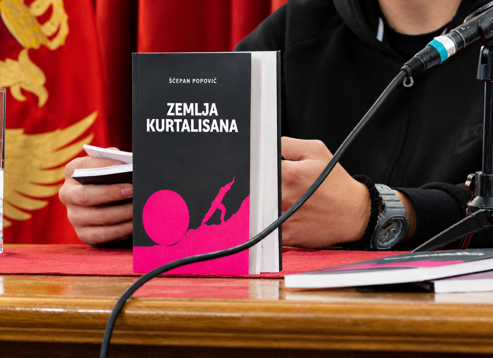

01
ZEMLJA KURTALISANA
Poetry Collection

SELECTED POEMS
PRESECI BLISKOSTI
Nebo se podiglo
Isuviše visoko
Da ne bih primetio
Forme.
Na tragovima tokova
Naslućujem reku.
Prečesto
Povlačim obale
Kako bi mogla pobeći.
Svet je prljavo mesto.
U presecima bliskosti
Zaobljenost formi
Iščezava u tvojim udovima.
Na granici pritiska
Trpiš ljubav.
Prija nam potraga.
Jednom bi se trebalo i sastaviti,
Obalama obećati mostove.
Tražimo se u
mediteranskom predvorju;
Ja sam na ivici
Ti si na trgovima smeha
Blizina vode
Mi ometa pravac
Iako
Naše Reke napuštaju obale
Stabla su nam ruke
I više ne možemo
Odohvatiti ljubav.
* * *
ISPOVEST
Došao sam da Ti se ispovedim.
Jednom.
Dvaput.
Okrenuću se po osećaju,
izleteti u svet;
Razglasiću da sam lep
Jer sam video kako Vam se Čovek ume
Lepo prikloniti.
Došao sam da Ti se ispovedim.
Retko.
Nežno.
Umeću da se zanesem
Kad sledeći put budem govorio
O Vama.
Proglasiću se tromim
I pustiti.
Svet ionako ne valja.
Trebalo bi ga menjati.
Došao sam da Ti se ispovedim.
Treći put.
Parolama ću trčati za njima.
Dovešću Vam ih.
Neka se otmu.
Ražaloste.
Neka me puste na miru.
Kad drugi put budem govorio
O vama,
umeću da se setim
Kako smo umetni
Koliko umemo voleti.
Došao sam da Ti se ispovedim.
Ovo je kraj puta.
O počecima bi valjalo ćutati.
Žena.
Jednom.
Dvaput.
Retko.
Nežno.
Neka te voli.
Neka te vrati.
* * *
MOJA CRVENA REVOLUCIJA
Stene su padale
Naniže od svojih senki.
Rastopljeni motivi
Tvoje borbe
Činili su te ženom.
Hteo sam dočarati
Temu mesta
U Tvom pripadanju.
Hteo sam ukrstiti puteve,
Rečne obale i
Stajališta
Kako bi prišla
Ti, komunisto,
Moja crvena Revolucijo.
U svetlu
Tuđeg trbuha
Hteo sam zdrobiti
Osamu pesnika
I prići lepoti.
Ne mogu čuvati
Tvoje padove.
Meni se svetlost
Činila senkom —
Zato sam kamen
Pokušao pretvoriti
U čoveka.
Zato sam čoveka
Pretvorio u kamen.
U sebi
Još
Negujem prošlost.
Reke su sa obalama
Srasle
I činilo se nemoguće
Rastopiti nestajanja.
U poslednjim traženjima
Čeličnih zaprega
Pritiskam vetar —
On ne sme odneti reči.
Tako bi kamen pao na čoveka.
* * *
MORE
Način na koji se mešaš
u vrtoglavicu ozloglašenosti
kazuje da
pesnik ne sme dozvoliti
da ne bude poražen.
Utroba
Pesak
Zrenevlje sveta
vri.
Naprasno se radujem
trgovima.
Kako sam lepo
pokušao da objasnim
more;
taj juli 2021.
* * *
OBALE
Prvi put
Obesno
Udaram tišinu,
povlačim reku
I prolazim.
Kao čovek,
kao ubica —
Dete što voli čoveka.
Goleme mreže grafike
putuju svetom
a ti me još pitaš
zašto te ne mogu opcrtati.
Beslovesne padine
u umeocima naših stvari.
Budim se retko
Tek
U prvom jutru naše obale
umem raspametiti okuku —
odavno postajem čovekom.
Zato
Nemoj da me pitaš
Kako gradim svetove.
Mogu se podsmehnuti na ovaj tvoj.
* * *
RASPAMEĆENE OKUKE
Kako da raspametim ljude u vašim okukama?
— postanak teze: Obale u nama sudaraju se na suprotnim stranama.
Sva večita slova betonskog sveta
bivaju lepša kad naše okuke
odumirući nestaju.
Čak i u mirisu grehova
betonske ploče popuštaju
a sklopljena tela
u prvom spajanju
ostaju nepomerena.
Više od ovog bića
Više od ove misli
okamenjene tišine
budeći se plaču.
Uzdrhtale dečje ruke
Učvrsle muške grudi
mog malog nestalog deteta.
Voleći da živim
dešavam se svetu bez bola.
Ukrojena visinska trenja
Udvojbene konstrukcije u meni
utrunulim peskom iz njegove suvišne ruke,
paviljonska žena u meni
ružom se hrani,
tera se zapadno.
Otrgla se okuka seća
ukrajinskih silovanja.
U betonu se čuje njegov glas.
I ruke koje nosim,
nosim da bih njega voleo.
* * *
KAMENI GRAD
Stojim
Kao pred kamenom.
Govori da plače.
Nije odavde.
Reke se suza
U njemu razbistriše.
Ja sam mu povratio svet
A sebe sam krenuo
Da spasem.
Sad sedim
U ogoljenoj simetriji
Drveta
Njegove krošnje
I svojih strepnji
Čoveče
Ja moram biti slobodan.
...
Kamen je biće
Kamen je svet
Vreme u njemu
Vri
U vetrovima Tvojim
* * *
SINESTEZIJA
Neobaveštenost prostora
Trguje instancama.
Na severnom delu
Trbušnosti njenog smeha
Celosti misli
Utapaju se u mene.
Osećam da raste
Dete u meni
Iako bi ga Ti
Trebala nositi.
O ljubavi
Uobičavam da ćutim.
Tišina svetlosti
Objašnjava mi mrak.
Ne umem umirati na miru.
Senkama trpim lepotu,
Smehom je tražim.
Potezna rukavica
Tvoje devičantnosti
Ne ume
Raštimovati hod.
I dalje sam prisutan.
Moram Te osetiti
Telom jezika
Da bih Te umeo
Pretvoriti u prostor.
Kameni udovi
Tvoje nestabilnosti,
Osmešena skulpturalnost
Nepoznatih reči..
Trebalo bi izmisliti
Svetove,
Nove praznine
Ne bi li utopili
Lepotu senki
U drhtaj
Ubijene stvarnosti.
* * *
NEOBAVEŠTENOST PROSTORA
Gradim svet praznine u kojem si postavljen na tlu.
Leđima okrenut ništavnosti svog postojanja,
otvara se novi svet Neba.
Pozorište na plafonu
Ukida simultanost percepcije
Moja umetnost
Se davi
Na trbuhu koji
Leđima okrenut
Svetli u zemlji.
Gradim svet
Praznine,
Prostor,
Neobavešten
Da slučajnosti
Na zidu moje iskrivljenosti —
Poništava trbušnost
Njenog smeha.
* * *
O VREDNOSTIMA
Hoću da kriknem
Da bih vriskom
Mogao da te sateram.
To je jedini način
Na koji mogu izvesti smrt
A da posle nje
Ostanem živ.
Ne znam koliko je to vredno.